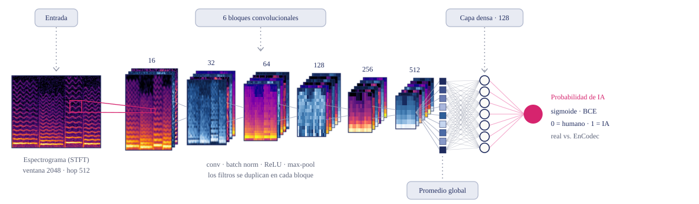

Humana
Blanco y Negro, de LAGOS y Elena Rose.
PyDay México 2026
Cómo se genera la música con IA, cómo se detecta y por qué no es tan fácil como parece.
Research engineer · machine learning y procesamiento digital de señales para audio y música

Antes de empezar
Así empezó la charla: seis fragmentos de canciones. Escúchalos y trata de adivinar cuáles hizo una persona y cuáles una inteligencia artificial.
Humana
Blanco y Negro, de LAGOS y Elena Rose.
Humana
Cover de Creep de Postmodern Jukebox, con Haley Reinhart.
IA
Sink Full of Sun, generada con Suno.
Híbrida
Yo toco la guitarra; Suno hizo la base.
IA
Sink Full of Dishes, generada con Suno.
IA
Walking Away de Sadie Winters, hecha con Suno. La popularizó Rick Beato.
Encuesta de Deezer e Ipsos a 9,000 personas en 8 países, noviembre 2025. En Deezer, más de la mitad de lo que se sube cada día ya es 100% IA, pero es apenas el 1–3% de lo que se escucha.
01 · Cómo se genera
Muchos generadores de música trabajan sobre un codec neuronal: algo parecido a un MP3, pero hecho con redes neuronales. El encoder comprime el audio en latentes; el decoder los convierte de vuelta en sonido. Un modelo generativo inventa latentes nuevos, y el decoder los vuelve música.
model = EncodecModel.from_pretrained("facebook/encodec_24khz").eval()
y, sr = librosa.load("audio/guitar.mp3", sr=24_000)
x = torch.from_numpy(y)[None, None]
with torch.no_grad():
latents = model.encoder(x) # (1, 128, 1303): 75 vectors per second
audio = model.decoder(latents) # back to 416,689 samples
rand = model.decoder(torch.randn_like(latents) * latents.std() + latents.mean())
zeros = model.decoder(torch.zeros_like(latents))Versión corta. Completo, con los códigos y más experimentos: examples/02_codec_latents.py
02 · Cómo se detecta
Convertimos el audio en un espectrograma y lo tratamos como un problema de visión por computadora: una red neuronal convolucional aprende a separar audio real de audio que pasó por el decoder.
y, sr = librosa.load("song.wav", sr=24_000)
S = np.abs(librosa.stft(y, n_fft=2048, hop_length=512))
S_db = librosa.amplitude_to_db(S, ref=np.max) # (1025, n_frames): an imageEl truco de los datos sintéticos: tomamos canciones reales (MUSDB18) y las pasamos por EnCodec. La música es la misma; solo cambian las marcas del decoder.

def conv_block(c_in: int, c_out: int) -> nn.Sequential:
return nn.Sequential(
nn.Conv2d(c_in, c_out, 3, padding=1), nn.BatchNorm2d(c_out), nn.ReLU(), nn.MaxPool2d(2)
)
model = nn.Sequential(
nn.BatchNorm2d(1),
conv_block(1, 16), conv_block(16, 32), conv_block(32, 64),
conv_block(64, 128), conv_block(128, 256), conv_block(256, 512),
nn.AdaptiveAvgPool2d(1), nn.Flatten(), # global average pooling
nn.Linear(512, 128), nn.ReLU(), # dense layer, 128 units
nn.Linear(128, 1), # 1 logit: 0 = human, 1 = AI
)
loss_fn = nn.BCEWithLogitsLoss()Datos, entrenamiento y evaluación: examples/03_detector_pytorch.py (unos 3 minutos en una laptop).
Pero el detector solo conoce un decoder. Los clips de Suno, que tienen otro, los da por humanos con total seguridad. Y con mi guitarra, una grabación casera muy distinta a sus datos, ni siquiera es consistente: cada vez que lo entreno da una respuesta diferente.
| Audio | P(IA) | |
|---|---|---|
| Mi guitarra | 0.0–0.9 | ? |
| Mi guitarra + EnCodec | ≈ 1.00 | ✓ |
| Clip 3 · Suno | 0.00 | ✗ |
| Clip 4 · híbrida | 0.00 | ✗ |
| Clip 5 · Suno | 0.00 | ✗ |
03 · Qué aprende el detector
Las capas de upsampling del decoder dejan picos en frecuencias fijas. En EnCodec caen cada 600 Hz. No se oyen ni se ven en el espectrograma, pero aparecen al promediar todo el audio. Dale play y cambia entre Original y EnCodec.
Una sola grabación, para ilustrar la idea. El estudio completo: Afchar et al., A Fourier Explanation of AI-music Artifacts, ISMIR 2025.
Casi nadie distingue la música generada por IA con solo escucharla.
Funcionan casi perfecto con lo que conocen, pero son frágiles ante generadores nuevos y transformaciones.
Muchas canciones mezclan pistas humanas y generadas. La pregunta es cuánta IA tienen.